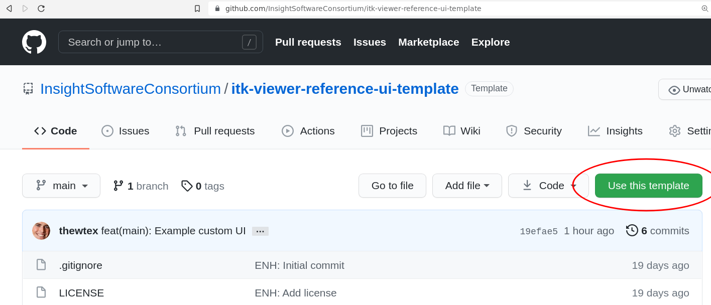
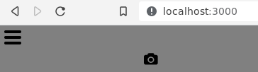
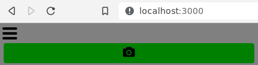

The viewer’s user interface (UI) is completely customizable. An existing viewer user interface can be tweaked, or a new user interface can be built from scratch. Use vanilla HTML/CSS/JavaScript or your favorite UI framework, such as React.js or Vue.js.
The user interface is specified on viewer creation with a JavaScript object or an object that specifies an ES Module. The UI object should contain functions that implement actions called as UI state machines respond to events. Nested objects provide actions for child state machines. A few example actions are toggleDarkMode or toggleUICollapsed.
Each action function is expected to accept two arguments: context and event.
The context is the current state machine context. A context object is comprised of the context generated by the viewer configuration and additional objects generated by the UI or renderer. For example, the createInterface action may add a div property to the context for the UI that other UI actions may reference later.
The event argument is the current event object that triggered the action. An event object contains the event name, an upper case string by convention. Optionally, the event may contain a payload in the data property. In addition to responding to events, a UI implementation will trigger events from user input and pass those events to the state machine by calling context.service.send(<triggeredEvent>). For example,
collapseUIButton.addEventListener('click', () => { context.service.send('TOGGLE_UI_COLLAPSED')) |
UI options architecture
Warning: the viewer machine’s architecture is experimental and it is subject to change without modification to the major version of the package. We mean it!
Available actions can be observed in the Reference UI Machine Options. If an action is not implemented, it is a no-op. Nested options objects correspond to the nested state machines. They are:
main: UI components impacting the entire viewer’s state. For example, the UI to toggle fullscreen mode or change the viewer’s background color.layers: UI components related to dataset layers. For example, the UI to select a layer or toggle its visibility.widgets: UI components for interactive widget parameters. For example, display the current distance measured by a distance widget.images: UI components related to the currently selected image layer. For example, the current color map used.geometries(todo): UI components related to the currently selected geometry layer. For example, the current geometry opacity.pointSets(todo): UI components related to the currently selected point set layer. For example, the current point set opacity.
Example: Main UI with only a screenshot button
This example demonstrates how to customize the reference UI so the main interface only presents a screenshot button.
Create repository
Let’s create a repository for our interface.
Either use the Use this template button on the itk-viewer-reference-ui-template GitHub repository:

or use the template repository on the command line:
npx degit InsightSoftwareConsortium/itk-viewer-reference-ui-template my-viewer-ui |
Edit interface
To create our interface, first install the Node.js packages:
cd my-viewer-ui |
Then start the development server:
npm run dev |
And visit http://localhost:3000 in your web browser. The template has customized the viewer’s Reference UI to only present a screenshot button in the viewer’s main interface. The main interface is customized with the createMainInterface action.
import referenceUIMachineOptions from 'itk-viewer-reference-ui/src/referenceUIMachineOptions.js' |

We re-use the rest of the user interface machine actions:
const uiMachineOptions = { ...referenceUIMachineOptions } |
And use the uiMachineOptions as the default module export:
export default uiMachineOptions |
Let’s make the background of the main user interface green by editing main.js:
[...] |
After saving main.js, the page will reload with our change applied:

Publish the UI module
Exit the development server with Ctrl+C if still open, then build a production version of the user interface module:
npm run build |
This builds the module dist/referenceUIMachineOptions.js.es.js.
We can publish our interface to npmjs.com. First change the package name in the package.json file to something unique:
{ |
Then publish the package:
npm login |
After published and propagated on the network, your package is available for download. The package files are also served by services like jsdelivr (better for production use) or unpkg (better for testing). Use your user interface by specifying it in the viewer config:
const uiMachineOptions = { href: "https://cdn.jsdelivr.net/npm/itk-viewer-reference-ui-template@0.1.2/dist/referenceUIMachineOptions.js.es.js" } |